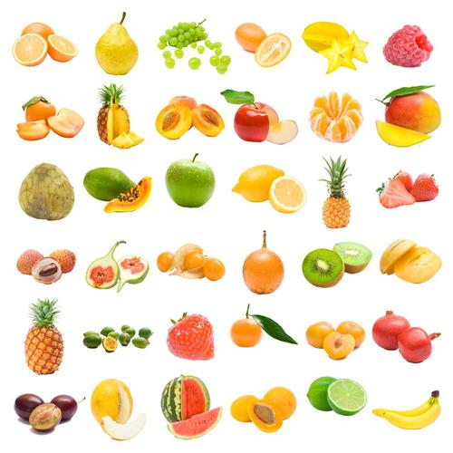

水果拍卖会
| 名称 | 价格 |
|---|---|
| 西瓜 | 3.99 |
| 葡萄 | 12.99 |
| 榴莲 | 33.99 |
西瓜（学名：Citrullus lanatus (Thunb.) Matsum. et Nakai）一年生蔓生藤本；茎、枝粗壮，具明显的棱。卷须较粗壮，具短柔毛，叶柄粗，密被柔毛；叶片纸质，轮廓三角状卵形，带白绿色，两面具短硬毛，叶片基部心形。雌雄同株。雌、雄花均单生于叶腋。雄花花梗长3-4厘米，密被黄褐色长柔毛；花萼筒宽钟形；花冠淡黄色；雄蕊近离生，花丝短，药室折曲。雌花：花萼和花冠与雄花同；子房卵形，柱头肾形。果实大型，近于球形或椭圆形，肉质，多汁，果皮光滑，色泽及纹饰各式。种子多数，卵形，黑色、红色，两面平滑，基部钝圆，通常边缘稍拱起，花果期夏季。 中国各地栽培，品种甚多，外果皮、果肉及种子形式多样，以新疆、甘肃兰州、山东德州、江苏东台等地最为有名。其原种可能来自非洲，广泛栽培于世界热带到温带，后传入中国。 西瓜为夏季之水果，果肉味甜，能降温去暑；种子含油，可作消遣食品；果皮药用，有清热、利尿、降血压之效。
葡萄（学名：Vitis vinifera L.）为葡萄科葡萄属木质藤本植物，小枝圆柱形，有纵棱纹，无毛或被稀疏柔毛，叶卵圆形，圆锥花序密集或疏散，基部分枝发达，果实球形或椭圆形，花期4-5月，果期8-9月。 葡萄是世界最古老的果树树种之一，葡萄的植物化石发现于第三纪地层中，说明当时已遍布于欧、亚及格陵兰。 葡萄原产亚洲西部，世界各地均有栽培， 世界各地的葡萄约95%集中分布在北半球。 葡萄为著名水果，生食或制葡萄干，并酿酒，酿酒后的酒脚可提酒石酸，根和藤药用能止呕、安胎。
榴莲（学名：Durio zibethinus Murr ），是一种锦葵目、木棉科巨型的热带常绿乔木，叶片长圆，顶端较尖，聚伞花序，花色淡黄，果实足球大小，果皮坚实，密生三角形刺，果肉是由假种皮的肉包组成，肉色淡黄，粘性多汁是一种极具经济价值的水果。 榴莲是热带著名水果之一，原产马来西亚。东南亚一些国家种植较多， 其中以泰国最多。中国广东﹑海南也有种植。榴莲在泰国最负有盛名，被誉为“水果之王”。它的气味浓烈、爱之者赞其香，厌之者怨其臭。 有个附会传说，中国古代明朝的时期，航海舰队到达今东南亚，品尝当地特产果实时，郑和对这种水果大为赞赏，然而果实只能一年一熟，故命名留恋，后人取其谐音，称作榴莲。